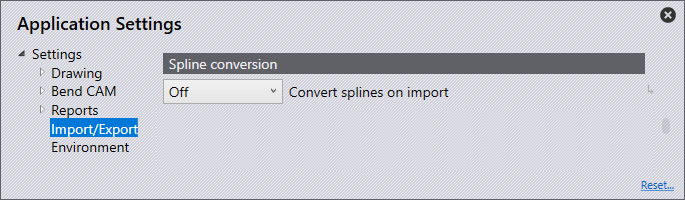

匯入/匯出
在本節中，我們將介紹Import settings的配置。

點擊首頁的Settings 圖示。
圖示。

Import settings
在本節中，我們將介紹Import settings的配置。點擊Settings圖示。點擊 Import/Export，然後前往Import settings。

Units for DXF files - 在此設定為毫米或英吋。
Stitch together lines/arcs closer than this - 設定此值（0 > 1mm）。當匯入的零件具有比額定值更近的線條/弧線時，軟體將在匯入時自動拼接。
Maximum thickness for sheet-metal part - 要識別大型板材零件，需要提高板材識別閾值。（10 > 40mm）預設情況下自動設定為25mm或一英吋，具體取決於所使用的單位。
Point entities - 根據所選選項將決定如何匯入點。
Import all - 所有點都將被匯入並顯示。
Skip points on polylines - 這會跳過折線上辨識到的所有點。
Skip all - 這會在匯入時跳過所有點，且不顯示任何點。
Ignore layers in DXF/DWG files - DXF和DWG圖紙通常在不同的圖層上創建。使用此設定時，軟體會忽略這些圖層，並將所有對象移動到預設圖層上。
Explode blocks in 2D drawing - 匯入時拆分組
Convert white entities to black - 打開此設定可在匯入期間將白色對象轉換為黑色對象。
Darken colors during DXF import - 打開此設定可在匯入期間調暗有色對象。
Remove duplicate segments - 打開此設定可在匯入時移除零件中發現的任何重複幾何形狀。
DXF settings
在本節中，我們將介紹DXF settings的配置。點擊 Settings 圖示。點擊Import/Export，然後前往 DXF settings。

Angles in DXF are interior angles - 啟動此設定，可將DXF中的角度作為張角處理。
Export settings
在本節中，我們將介紹Export settings的配置。點擊 Settings圖示。點擊Import/Export，然後前往Export settings。

No POLYLINE objects in DXF output - 通常，在匯出DXF時，閉合輪廓會以折線形式輸出。某些CAD系統無法處理此輸出。使用此設定時，軟體會以線條和弧線輸出DXF。這些檔案在任何地方都可讀取，但建立的檔案較大，且線條和弧線之間的連接丟失
Output bend-info when saving DXF files - 打開此設定，可將匯出的DXF與折彎資訊一起輸出。
Bend-info in Starmatik format - 將此開關打開，可輸出Starmatik格式的折彎資訊。這是文字實體正好定位在每條折彎線的中間的位置。
Convert black to gray on output - 匯出2D資料時，DXF檔案中的對象預設以黑色輸出。爲了能夠更好地識別CAD程式中的對象，對象將使用此設定以灰色輸出。
Start MetaCAM when PDG files are exported - 打開此設定，讓PDG檔案自動配置為在MetaCAM中打開
Format for flat pattern - 匯出平面圖案時，可以將其設定為GEO、DXF或PDG檔案格式。
Spline conversion
在本節中，我們將介紹 Spline conversion 設定的配置。點擊Settings圖示。點擊 Import/Export 然後前往Spline conversion設定。

Convert splines on import - 在此設定樣條轉換是否關閉或設置為「將樣條轉換為線條或弧線」。無論哪種情況，每個樣條都將轉換為單個折線對象，包含線段或弧線段。
Node-count computation - 線條或弧線的數量使用兩種機制之一計算：節距或偏差。
Length of each line or arc segment - 如果在節點計數計算中選擇了節距，請在此處設置每條弧線或線段的長度，以使用此步長分解樣條。
Maximum deviation during approximation - 如果在節點計數計算中選擇了偏差，請在此處設置原始平滑樣條與線條或弧線近似值之間允許的最大偏差。折線的構造為盡可能少的段，同時仍將最大誤差保持在此限制範圍內。
Assembly Explode
在本節中，我們將介紹Assembly Explode設定的配置。點擊Settings圖示。點擊
Import/Export 然後前往Assembly Explode設定

Skip sheet-metal parts with no bends - 分解組件時，打開此開關只會顯示帶有折彎線的板材零件。關閉將顯示組件中的所有零件。
Components (nuts/bolts etc) to display - 使用此設定可選擇分解包含其他部件的組件時要顯示的選項。
None - 分解後僅顯示板材零件，不顯示其他螺母/螺栓。
Unidentified - 僅顯示軟體中待識別的部件。
All - 顯示所有部件。
Layer mapping

在本節中，我們將介紹Layer mapping的配置。點擊 Settings 圖示。點擊Import/Export並導航至Layer mapping設定。在本節中，正在匯入軟體的零件上所使用的圖層可以自動映射到其功能（使用）。
如果匯入的零件有 MARK 圖層，則可以將其設定為自動使用軟體中的標記圖層。
Layer name - 這是圖層的名稱，如果使用此名稱匯入零件，它將使用「使用」面板中設置的功能。
Use - 這是圖層的功能。可用的不同選項包括：
Standard - 這是用於CAM的標準圖層。
Auxiliary - 輔助圖層，不適用於 CAM 。
Mark - 此圖層中的任何實體都將被標記，而不是被切割。
Approach marker - 指示雷射進刀位置的點實體。
Sequence marker - 指示輪廓順序的文字標記。
Forming center - 成型加工中心標記（點或小L）。
Forming foot print - 成型加工的輪廓（足跡）。
Evaporate - 此圖層將用於區分薄膜燃燒。
Dot marking - 此圖層將用於QR碼。
Info - 這是僅提供資訊的圖層。